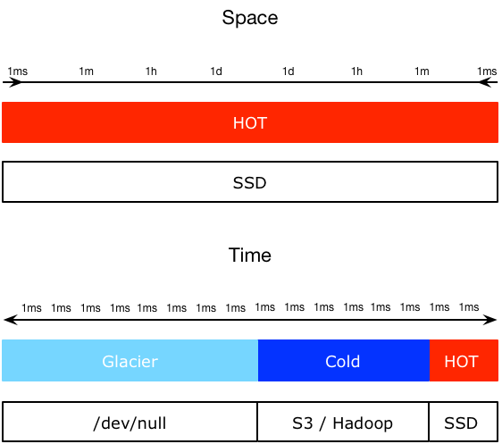
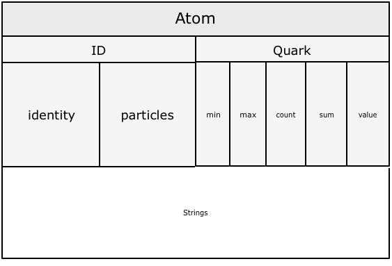
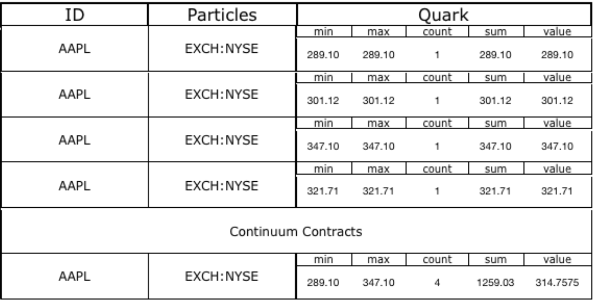
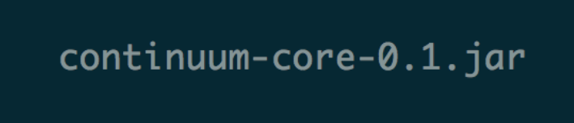
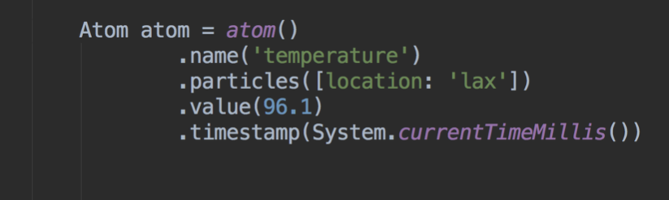

Continuum
A tool for storing and analyzing large amounts of time based data
- Core Library
- REST Interface
- Backup / Restore
- Streaming Replication
- master/slave
- master/master

Project Goals
Presentation:
- 200k writes per second forever on commodity hardware
- Memory mapped files, Log-Structured-Merge trees for storage and retreival
- Leverage existing technologies: RocksDB, LevelDB, BerkeleyDB
- Downsample for disk space efficiency
- Continuous, scalable, infinite time data stream using windowing, downsampling, or both
- Specialized schema design for time series and time key data
Atom

Contract (Fusion/Fission)

Time Series
Space/Time: Analysis, Dashboard/UI
- Small number of unique time series with very large data volume (millions to trillions)
- Infinite storage using retention policies and downsampling (RRDTool, Whisper, InfluxDB inspired)
- Downsampling OK
- Example: "Realtime" performance metrics, measurements of cpu, or weather temperature readings over time
Time Key Value
Time/key:value: User Session and Session Metrics
- Large number of unique keys with smaller amount of data (10s to 1000s)
- For aggregating data by a unique key
- Stream to cold storage over time
- Fast data (SSD): hot, newest data
- Slow data: rolling window of data through ColdStorage (S3, Hadoop, NAS)
- Example: "Realtime" analytics data events grouped by session or user id
Build and Install
make
or
./gradlew install
Maven
<dependency>
<groupId>com.dlvr</groupId>
<artifactId>continuum-core</artifactId>
<version>+</version>
</dependency>
Gradle
compile 'com.dlvr:continuum-core:+'
API


Creating Atoms
// open continuum
Continuum continuum = continuum().open()
// create an atom
Atom atom = continuum.atom()
.name('temp')
.particles(city:'lax', state:'ca', country:'us')
.value(99.5)
.build()
continuum.write(atom)
Scans and Slices
// scan continuum and get a slice of the atoms
Slice slice =
continuum.slice(
scan('temp') // temp series
.function(Function.AVG) // average temperature
.particles(country: 'us') // where country = us
.group('state', 'city') // group by state, city
.end(Interval.valueOf('10d')) // last 10 days of atoms
.interval(Interval.valueOf('1d')) // in 1 day intervals
.build())
Values values = slice.values() // {min,max,count,sum,value}
List groups = slice.slices() // {ca:values,lax:values}
continuum.close()
Scaling
- Add disks
- Cold online backup (backup/restore)
- Hot online backup(s) (read-only replication)
- Application level sharding by key or time
- Cluserting (master-master replication)
Authors
Zack Bartel (@zackb), and Matt Johnson (@mj-dlvr) work on Continuum.
Hacking
We love contributions. For now please open an issue or contact me